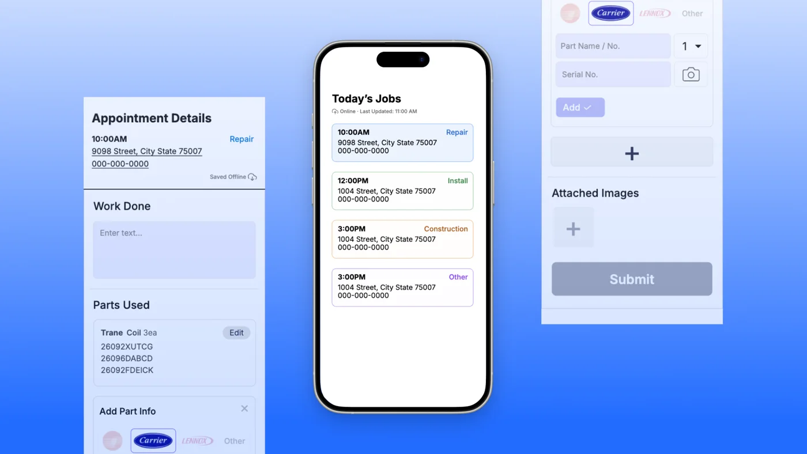

Physics & Computing and the Arts @ Yale
Previously Hanwha Life★CreativeMUT★Yale University Library Technical Services

The app is live and used daily, and is in the final stage of its business impact assessment.
HVAC technicians had a scattered system for tracking appointments, work logs and serial numbers, which led to operational inefficiencies in creating invoices and following up with clients.
A task management platform that centralizes appointments, work logs and equipment information and forwards them directly to the office, for a faster turnaround on invoices. The office dashboard helps collapse duplicate information from technician forms, manage schedules and generate invoices.
Try out selected mini-projects that combine all of my interests.
Qubit Clock to tell the date-time through a qubit.
Try it out → ascii-moonjar2025Moonjar ASCII art generator with export to GIF.
Try it out → pocketliferoom2026Goal tracking as an interactive game-ified room.
Try it out → art-search2023Backend project to search items in an art gallery.
Try it out →The trail I've treaded so far.
UI/UX Design Intern
Designed the Gift Growth Planner for the Pi app, presented it to executive leadership, and worked with PMs and engineers through development.
Data Engineer
Built data pipelines and interactive visualizations that make 12,031 catalog records in 1,671 languages easier to discover.
Design Engineering Intern
Technical lead for media-art exhibitions in Osaka and at Singapore Changi Airport, and took the Interactive Message Wall from concept to launch.
Physics & Computing and the Arts
Studied the design of everything, from quasicrystals to web interfaces!